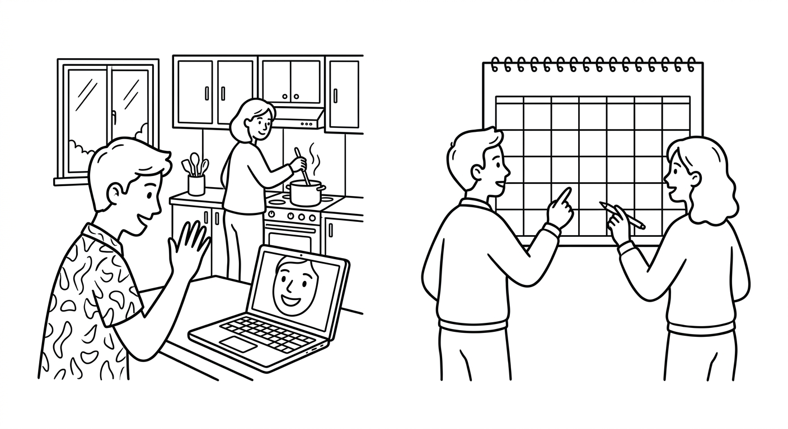

B2 Foundation Test 2
A video call, a weekend plan, an explanation, and a recipe. Show that you can understand what is happening now, read about plans and reasons, write about your week, and use the formulas from Chapters 6–10. (Uma chamada de vídeo, um plano para o fim de semana, uma explicação e uma receita. Mostre que você entende o que está acontecendo agora, lê sobre planos e motivos, escreve sobre sua semana e usa as fórmulas dos Capítulos 6–10.)

| Section | Points | Score |
|---|---|---|
| 1. Listening | 25 | ____ / 25 |
| 2. Reading | 20 | ____ / 20 |
| 3. Writing | 20 | ____ / 20 |
| 4. Grammar and Vocabulary | 35 | ____ / 35 |
| Total | 100 | ____ / 100 |
Suggested time: 70 minutes. The teacher will read the listening text twice. You may take short notes. Write clearly. In open answers, communicating the message matters as well as accuracy. Question 17 reviews Chapters 1–5. (Tempo sugerido: 70 minutos. O professor vai ler o texto de listening duas vezes. A questão 17 revisa os Capítulos 1–5.)
Listening: The Video Call Before the Festival
Before reading: give students 45 seconds to preview Questions 1–5. Read the complete script once at careful B2 speed — slower than natural conversation, but do not separate every word as at B1. Pause for 30 seconds. Read it a second time. Do not explain vocabulary during the test. Procedural instructions may be given in Portuguese; the script itself is read only in English. Total recommended time: Listening 12 min, Reading 15 min, Writing 18 min, Grammar/Vocabulary 25 min.
Bia: Hi Rodrigo! Can you see me? I'm calling from the community centre.
Rodrigo: Hi Bia! What's going on there? It's very noisy.
Bia: We're preparing the June festival. Marcos is hanging the flags, and the volunteers are cooking. I usually study on Fridays, but this week I'm helping here every afternoon.
Rodrigo: Why are you helping every afternoon?
Bia: Because the festival is this Sunday, so we don't have much time!
Rodrigo: Can I come and see it?
Bia: Of course! We're meeting in front of the church on Sunday at half past four.
Rodrigo: Sorry, do you mean four o'clock or half past four?
Bia: Half past four. First we're watching the dance, then we're eating, and finally there's music in the square.
Rodrigo: Perfect. Sunday at half past four, in front of the church. See you there!
Answer with a word, a phrase, or a short sentence. (Responda com uma palavra, uma expressão ou uma frase curta.)
What is Marcos doing right now?
He is hanging the flags.What does Bia usually do on Fridays, and what is different this week?
She usually studies on Fridays, but this week she is helping at the community centre every afternoon.Why don't they have much time? Answer with because.
Because the festival is this Sunday.Rodrigo is not sure about the time. What does he ask?
"Sorry, do you mean four o'clock or half past four?" (any close version of the repair question)Where and when are they meeting on Sunday? Write the place and the time.
In front of the church, at half past four (4:30).Reading: Juliana's Busy Week
Hi Beatriz!
I usually go to bed early, but this week I'm sleeping very late because of the science fair. Our project is almost ready, so I'm happy — although I'm very tired!
Good news: I'm visiting you on Saturday! I'm taking the ten o'clock bus, and I'm bringing pão de queijo. My grandmother taught me the recipe: first, you mix the cheese and the flour. Then, you add the eggs and a little oil. After that, you make small balls. Finally, you bake them for twenty minutes.
I wanted to come on Friday, but the fair finishes late, so Saturday is better.
See you soon! Juliana
Why is Juliana sleeping late this week?
Because of the science fair (her project).What are Juliana's two arrangements for Saturday?
She is visiting Beatriz / taking the ten o'clock bus, and she is bringing pão de queijo.In the recipe, what do you do AFTER you add the eggs and oil?
You make small balls. (Then you bake them for twenty minutes.)Why is Saturday better than Friday for the visit?
Because the fair finishes late on Friday.Writing: Your Week and Your Weekend Plan
A friend wants to see you this weekend. Write 60–80 words. Include: (Um amigo quer ver você neste fim de semana. Escreva de 60 a 80 palavras. Inclua:)
- one thing you usually do and one thing that is different this week (Present Simple + Present Continuous);
- one reason with because;
- one contrast with but or one result with so;
- an arranged plan with day, time, and place (We're meeting...);
- one question about your friend's plans.
| Writing criterion | Points | Teacher score |
|---|---|---|
| Completes the message and includes the five required details | 8 | ____ / 8 |
| Message is organized and understandable | 4 | ____ / 4 |
| Target language supports meaning (Present Simple vs Continuous, connectors) | 4 | ____ / 4 |
| Vocabulary, spelling, and punctuation are clear enough | 4 | ____ / 4 |
Message completion comes first: did the student communicate the five details? Do not deduct the same error twice. A message with imperfect grammar can score well when the plan is clear and easy to understand. Written feedback may combine English and Portuguese at this level.
Grammar and Vocabulary in Context
Complete or rewrite each everyday situation. Question 17 reviews Chapters 1–5. (Complete ou reescreva cada situação do dia a dia. A questão 17 revisa os Capítulos 1–5.)
Correct the sentence: "I am wanting some water, please."
I want some water, please. (want is a stative verb — no continuous)What to Keep and What to Practice Next
| Skill | Score | Next action |
|---|---|---|
| Listening | ____ / 25 | Listen for what is happening now, reasons, and the day, time, and place of plans. |
| Reading | ____ / 20 | Separate routine from this week, and follow steps in order. |
| Writing | ____ / 20 | Contrast usually vs now, give a reason, and confirm a clear plan. |
| Grammar/Vocabulary | ____ / 35 | Review -ing forms, stative verbs, arrangements, connectors, and sequencers. |